7-Eleven Thailand
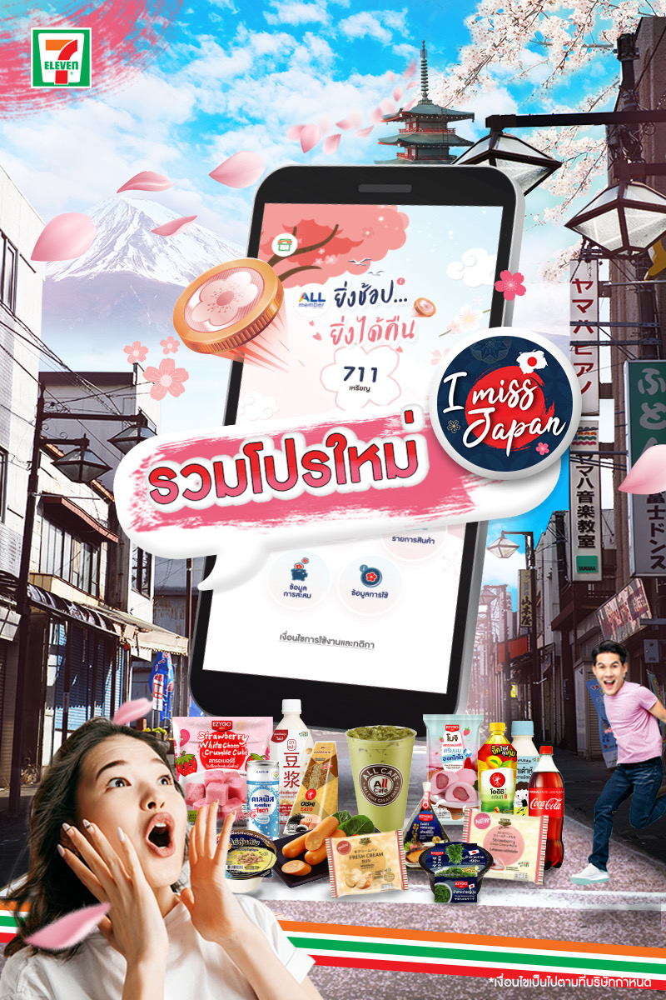
Five years of social media design across brands in different industries — each with its own tone, audience, and visual language. From convenience stores to industrial groups to food platforms.

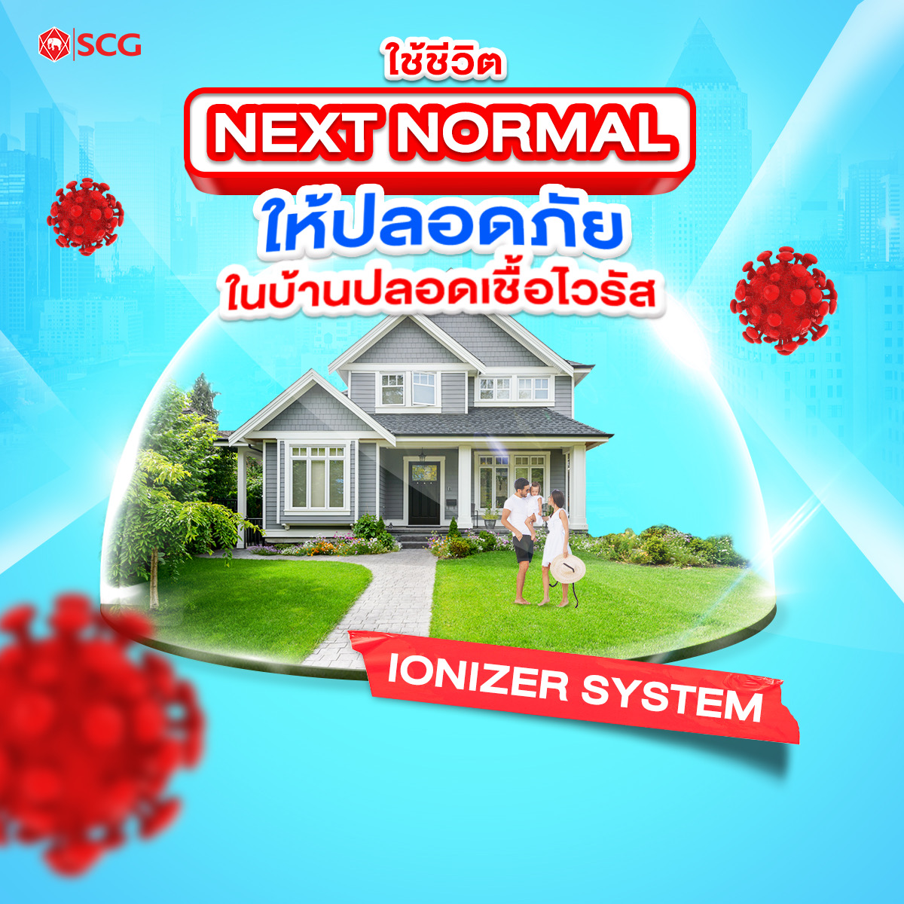
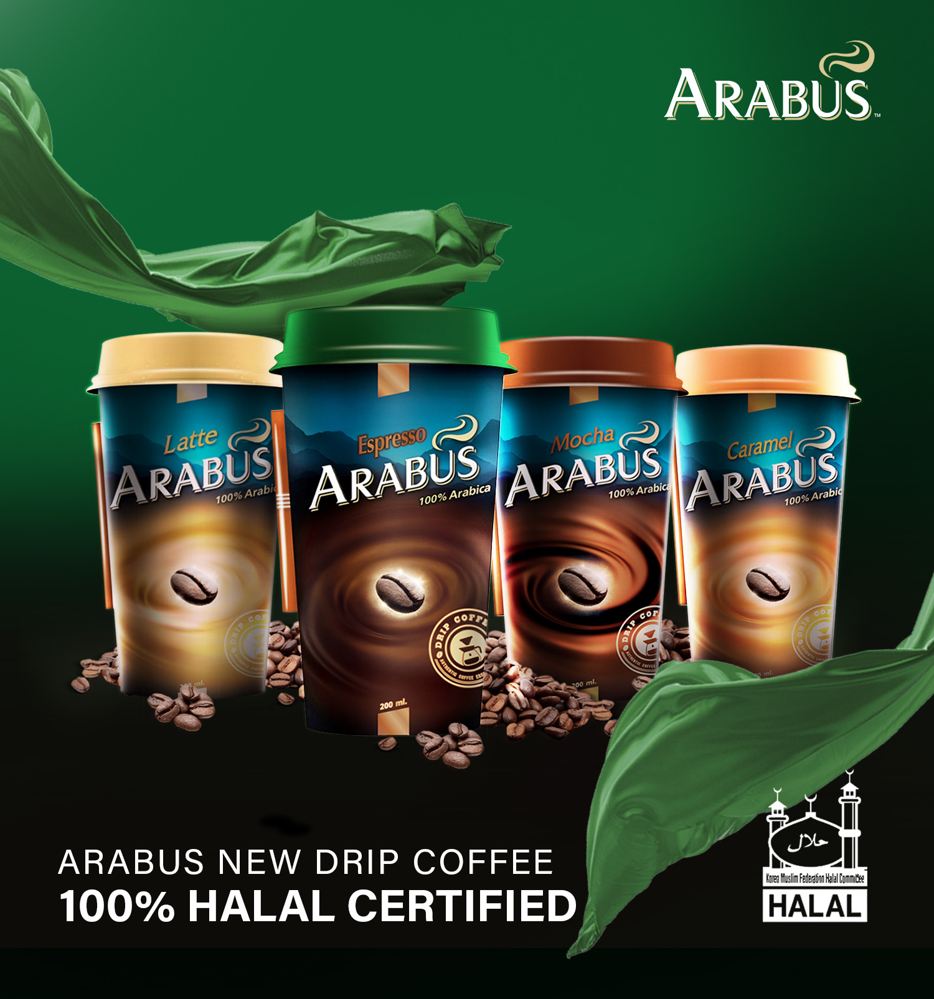
Agency social media work is fast, relentless, and less forgiving than it looks. Briefs, trends, and brand needs shift all the time — and the clients had nothing in common: a Thai convenience store, a global building materials group, a startup food app, a specialty coffee distributor.
The job was to understand each brand deeply enough to produce content that felt right for them, not just content that looked nice. And to do it consistently, at scale, without losing quality.
Different brands, same discipline — every campaign moved through the same four steps.
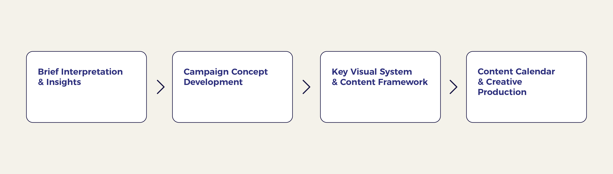
Every campaign starts by breaking the brief down into a clear goal, audience, and single message. Brand, category, and audience insights then shape where the creative can go.
The insight becomes a campaign idea — a core concept strong enough to carry every post that follows. Directions are explored, tested against the brief, and narrowed to one.
The chosen concept is designed into a key visual and a repeatable system: layout, type, color, and image style. Content pillars and formats are set so every post stays on-brand without starting from zero.
Posts are planned on a calendar, then produced and adapted for each platform and format. Rounds of review keep quality consistent, and content ships on schedule.
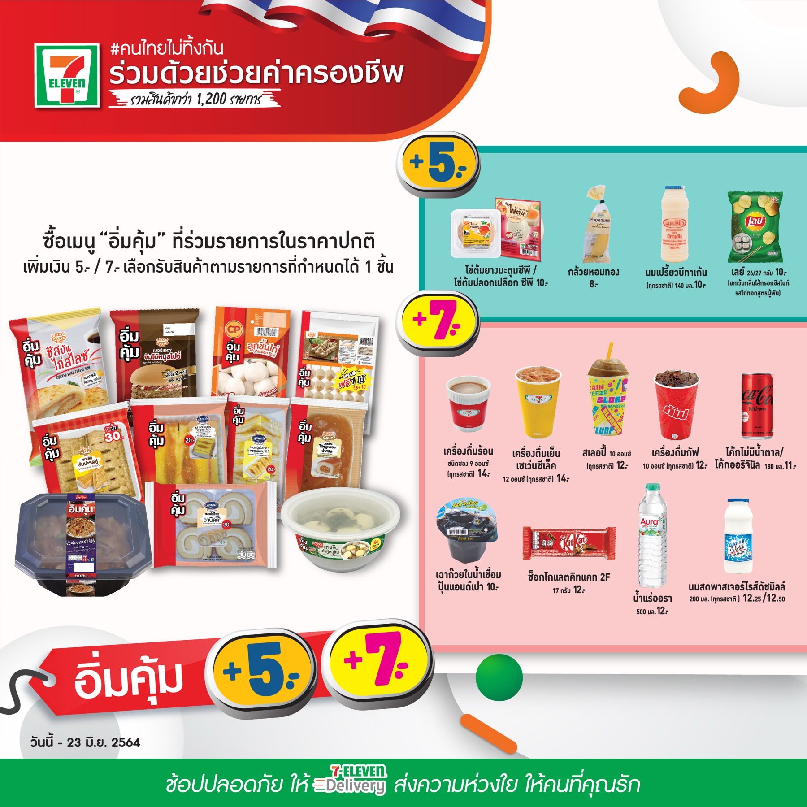
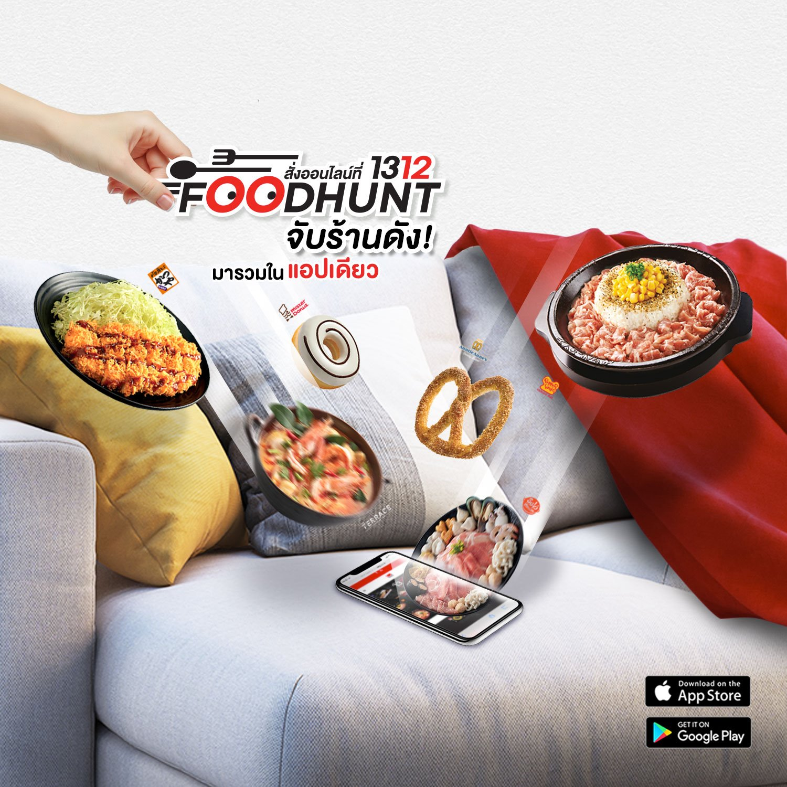
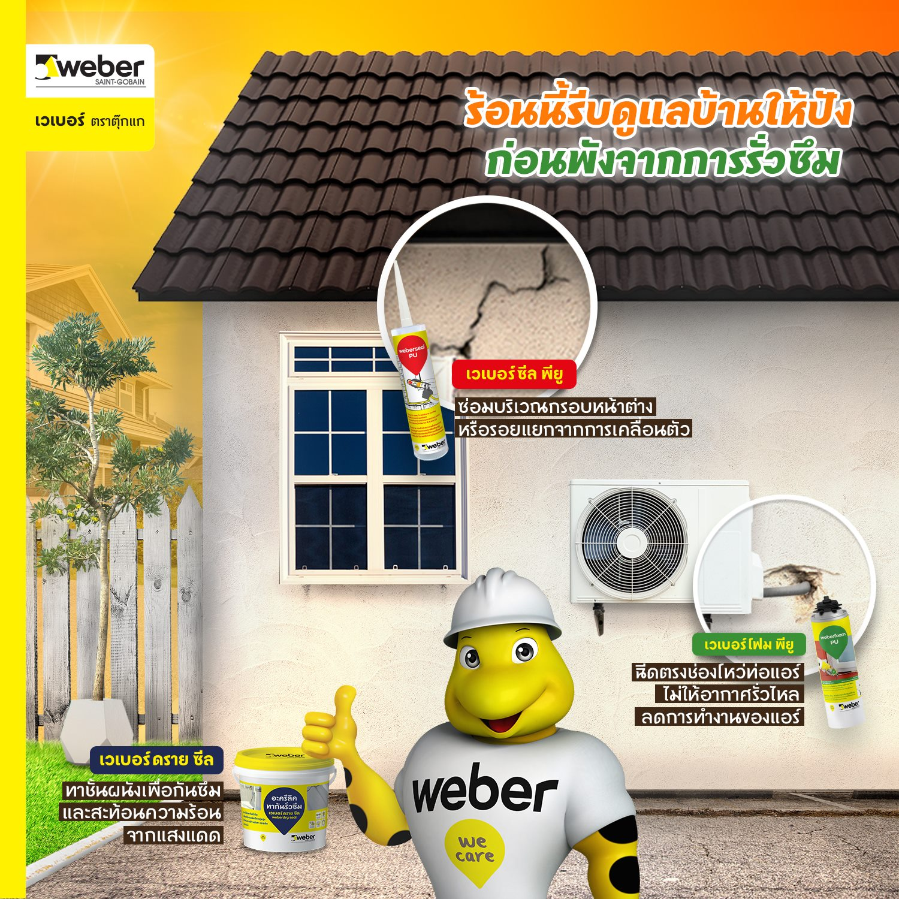
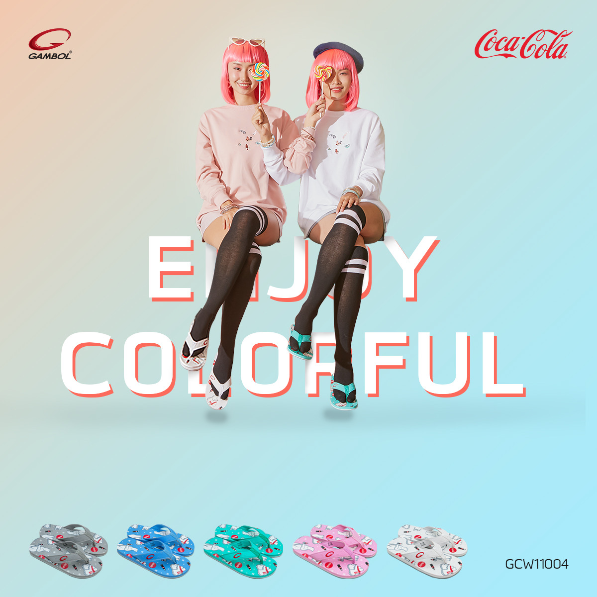

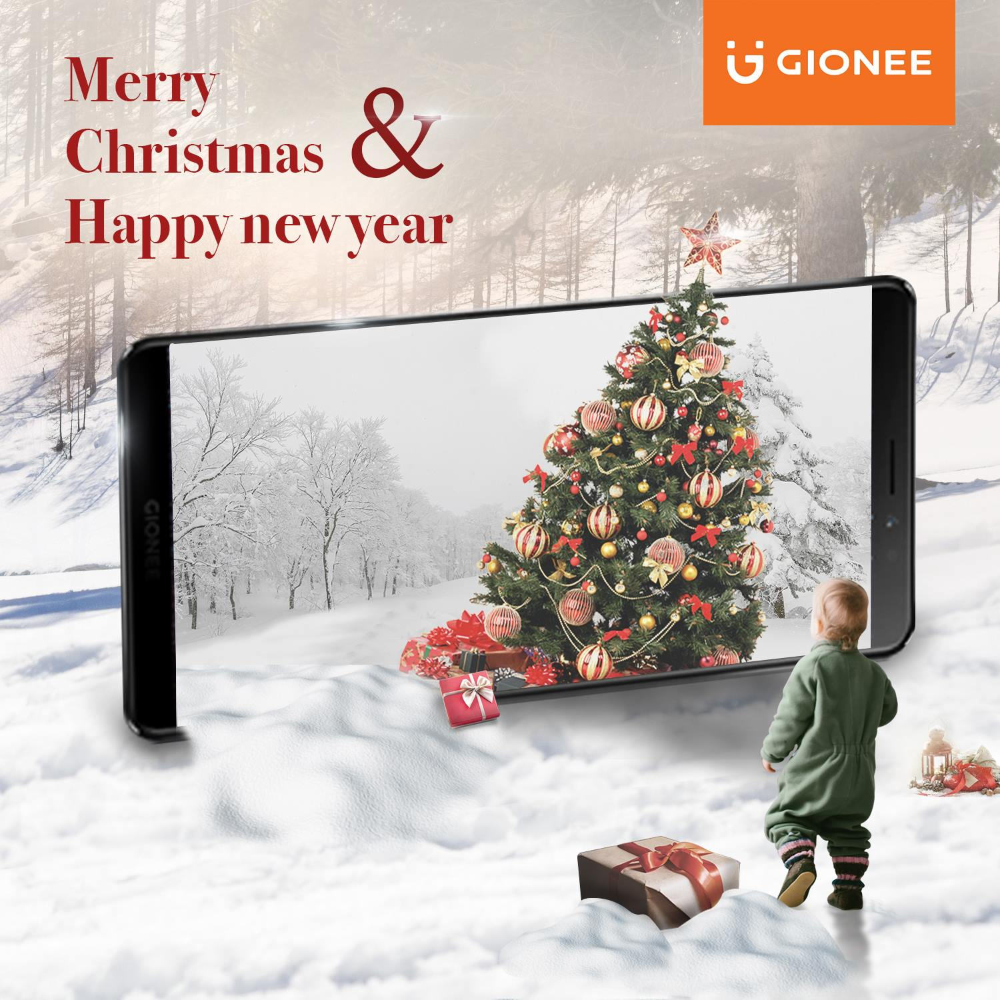

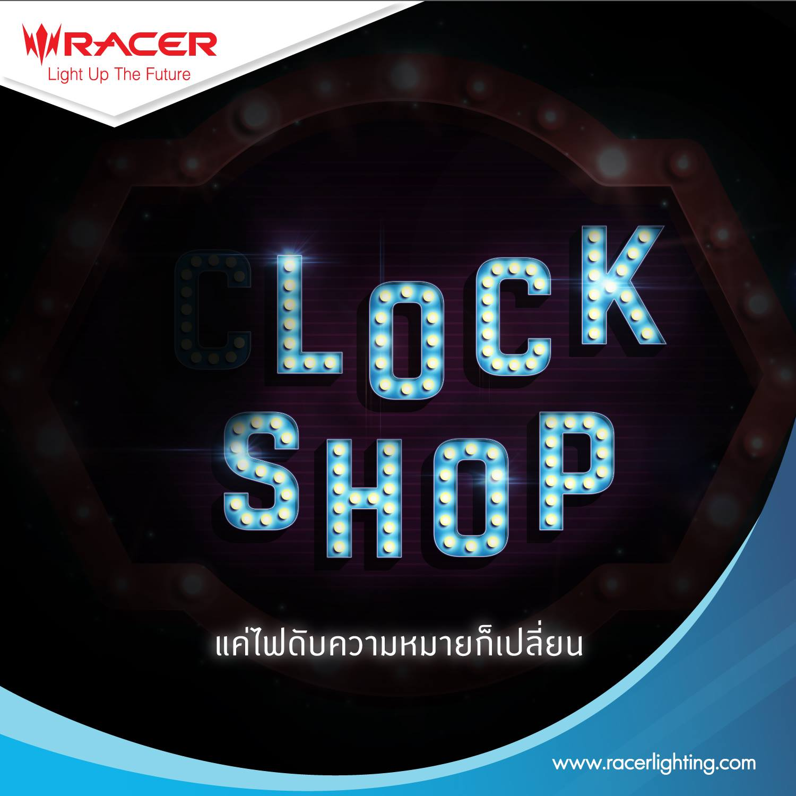


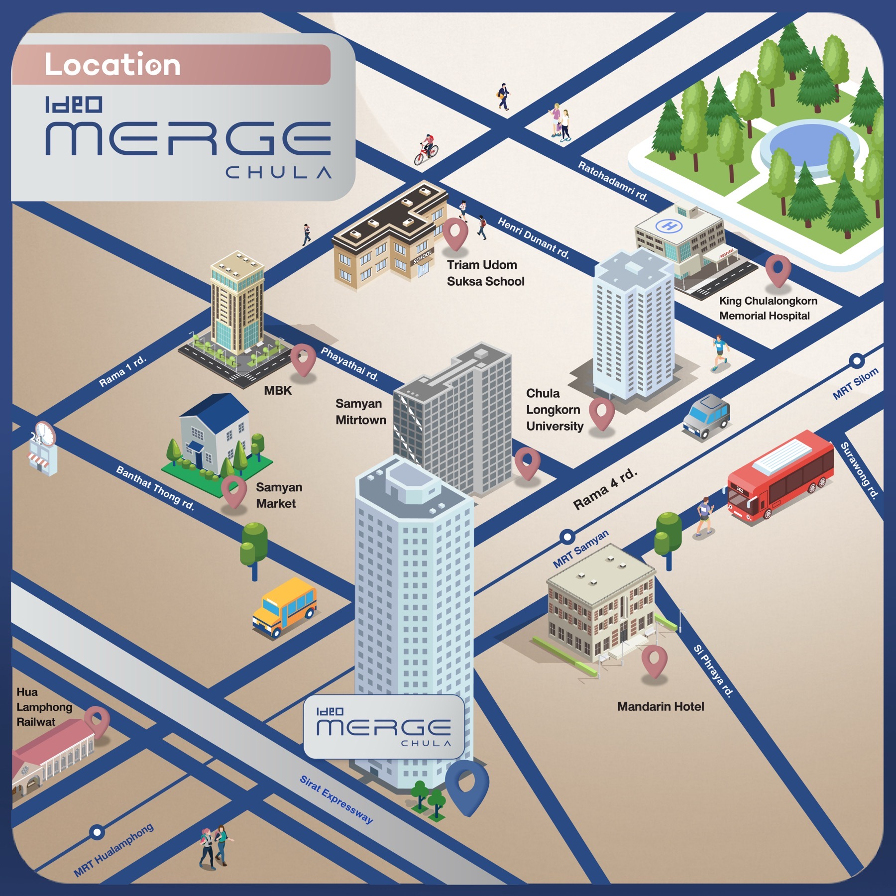